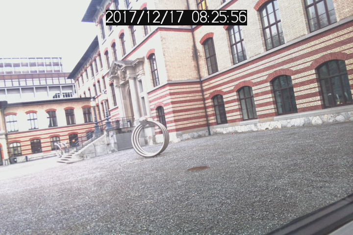

Access camera images over SCION network¶
The camerapp application contains image fetcher and server applications, using the SCION network. Documentation on the code is available in the README.md.
imagefetcher¶
To install imagefetcher:
go get github.com/netsec-ethz/scion-apps/camerapp/imagefetcher
Note
If you are running SCION in a VM this app is already installed.
To use the image fetcher, you will need to pass your local host's address as a SCION address (in the format ISD-AS,[IPv4]:port) and specify the address of an image server, for instance 17-ffaa:0:1102,[192.33.93.166]:42002. The local ISD and AS number can be seen for instance from files in the logs directory: br17-ffaa_0_1102.log indicates that we are in AS ffaa:0:1102 in ISD 17. Another way is to look at the gen directory, which in this case contains a subdirectory called ISD17, which contains subdirectory ASffaa_0_1102. The IPv4 address represents the local address the application binds to, and the local port number can be freely selected as any available port.
A sample image server that can be contacted by any client is set up at 17-ffaa:0:1102,[192.33.93.166]:42002.
The client address is passed with -c and the server address with -s:
imagefetcher -s 17-ffaa:0:1102,[192.33.93.166]:42002 -c 17-ffaa:0:1108,[10.0.2.15]:42001
The fetched image is then saved in the local directory. A sample image is shown below: 
imageserver¶
To install imageserver:
go get github.com/netsec-ethz/scion-apps/camerapp/imageserver
The imageserver application keeps looking for .jpg files in the current directory, and offers them for download to clients on the SCION network. The assumption is that the application is used in conjunction with an application that periodically writes an image to the file system. After an amount of time (currently set to 10 minutes), the image files are deleted to limit the amount of storage used.
Included is a simple paparazzi.py application, which reads and saves the camera image on a Raspberry Pi. The system is launched as follows:
python3 ${GOPATH}/src/github.com/netsec-ethz/scion-apps/camerapp/imageserver/paparazzi.py & imageserver -s 17-ffaa:0:1102,[192.33.93.166]:42002 &